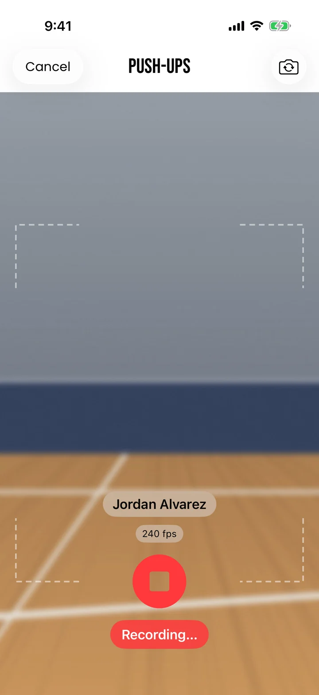
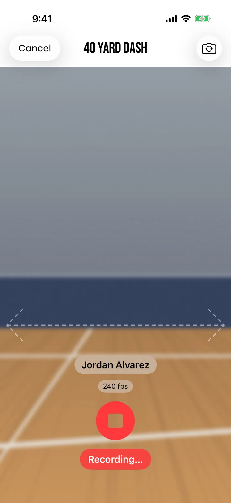
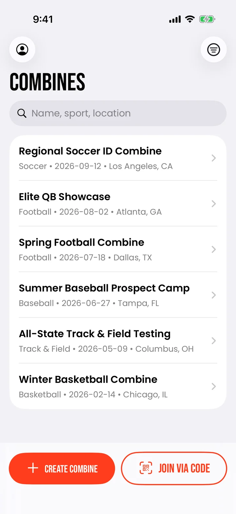
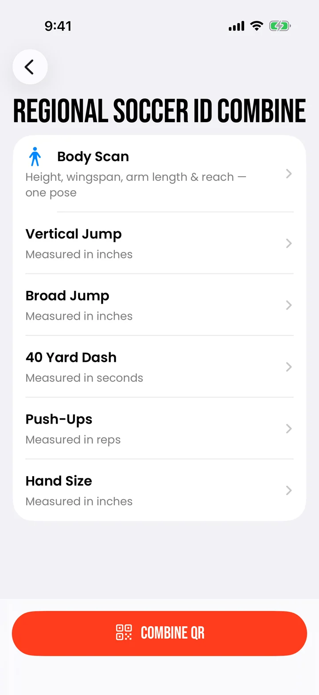
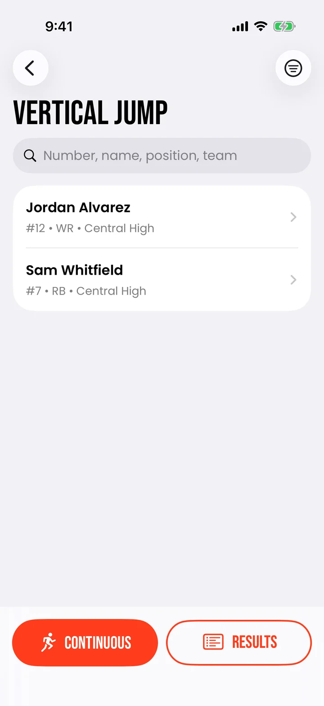
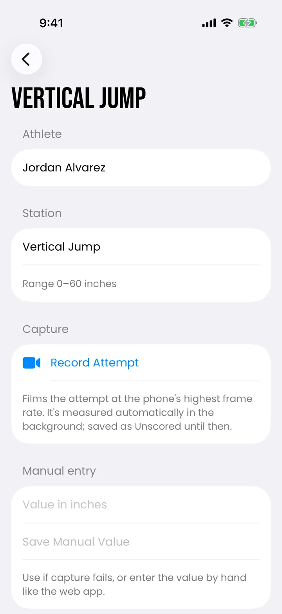
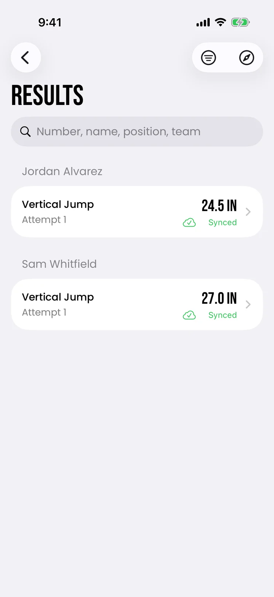

Measuring athletes with a phone
I designed and built an iPhone app that lets coaches measure athletes with the phone's camera at combines, the testing events where high school athletes run, jump and lift for college recruiters.
- Role
- UX Engineer Intern
- Methods
- Field observation, coach interviews, user testing
- Built with
- Swift, SwiftUI, ARKit, Apple Vision
- Status
- In development, Android version underway



The problem
Coaches ran combines with pen and paper. At most events, one coach did nothing but write down numbers instead of coaching.
The paper sheets then went to EXACT, where staff transcribed and typed every result. Each handoff cost time and added another chance for an error.
Could a phone take the measurements and record them, so coaches could coach and the data arrived clean?
Research
I went to an EXACT combine in Wisconsin. I watched how each station ran, took notes on where time and accuracy slipped, and talked with coaches about their frustrations and about the idea of an app doing the measuring.
Apple's AR tools turned out to have real limits. The front and back cameras can do different things, so some stations needed their own setup instead of one shared approach. The lesson I took: find a technology's limits early and design around them.
What I built
A coach picks the event, then a station, then the athlete. Every station has a manual-entry fallback, so it works on day one even before the phone can measure it.



A continuous mode lets one coach run a whole line of athletes hands-free: the app identifies each athlete by their spoken name or jersey number. Results save on the phone first and sync when there's a connection, so nothing is lost when the gym's signal drops.


Design decisions
I wrote the experience down before building it. I built the app with Claude Code as a coding partner. AI-written code drifts: ask twice and you get two slightly different screens. So I wrote out the user flow and the rules each screen had to follow, and held every build to that spec. Every station works the same way, so a coach who learns one can run them all.
The broad jump took the most rework. My first version tracked the athlete's body with ARKit. Body tracking only works with the phone held sideways, and it measured from ankle to ankle instead of the official toe to heel. I switched to finding the feet in the video and placing them on the floor the phone had detected, then corrected the reading to the official distance.
The vertical jump went the other way. The app times how long the athlete is in the air, and physics turns that time into jump height. Because it needs no calibration, it was the most reliable station from the start.
Testing
EXACT staff and I tested the app all the way through the build, not just at the end, so a core flaw could show up before any feature got polished.
The biggest flaw was measurement accuracy. I recorded real jumps and built replay tests that run each recording back through the measuring code, so a change that broke a reading showed up right away, not at the next event.
Outcome
The app is still in development. EXACT is porting it to Android and building more stations on top of the ones I introduced.
Next time, I'd test the hardware's limits in week one. The camera differences shaped several stations, and knowing them before designing would have saved rework. I'd also time a paper-based station first, so the app's improvement has a number attached.